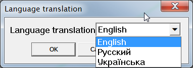

About
Plugin for Sketchup® Pro 2014 or higher. It is a library for use by other plugins.
Using
Can be using as a plugin or by connecting the modules and individual files or a part of source code to develop own plugins. Menu to access for libs tools are located here:
Tools ► Yorik Lib
Localization
All plugins and tools of author's (Yorik Tools) are using one language (localization). Changing localization is implemented by LangHandler. Change language setting by using tools:
Tools ► Yorik Lib ► Language translation

Note. When opening help of plugin of part of Yorik Tools will be show page in active language and while it does not exist - on the default language (in this case is English).
Installing
Plugin works only in Sketchup® 2014. Update before install. Installing Ruby Plugins in Sketchup.
Development
Source code on GitHub. Documentation on rubydoc.info.